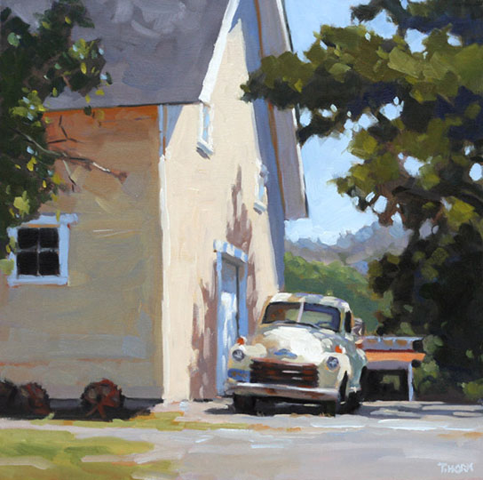
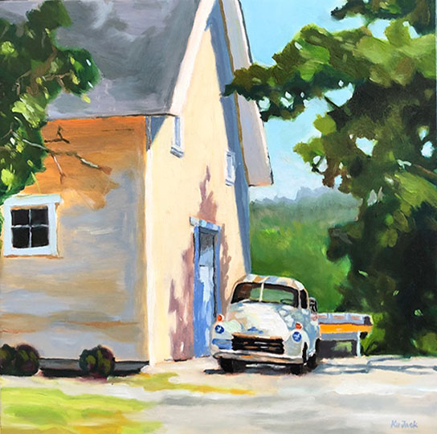
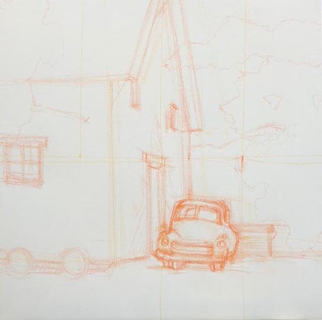
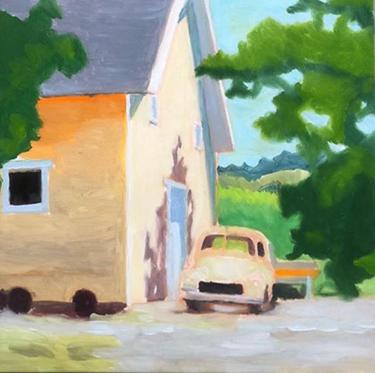
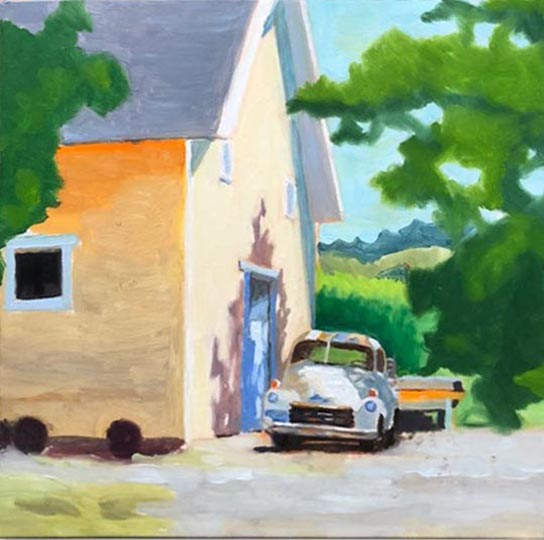

 
과수원 꿈
이번에는 자동차 그림을 그리고 싶었다. 진천으로 이사오면서 자동차를 더 좋아하게 된 것 같다. 집안에 작은 모형 자동차들을 진열해 놓기 시작한 것도 그 때문이다.
Thmothy horn 은 1984년에 뉴욕의 쿠퍼 유니언 미술 학교를 졸업하고 회사의 디자이너로 활동하다 1998년에 그림을 그리기 시작하여, 2006년에는 다자인 사업을 접고 전문 화가의 길로 들어셨다. 그는 농촌의 일상적인 풍경을 그림을 그리고 있다.
  